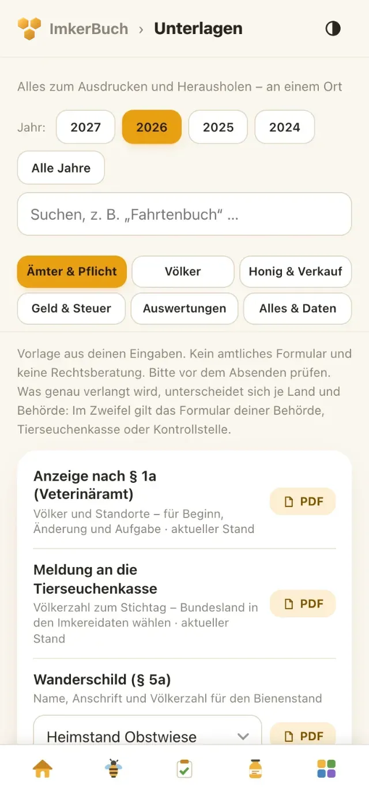
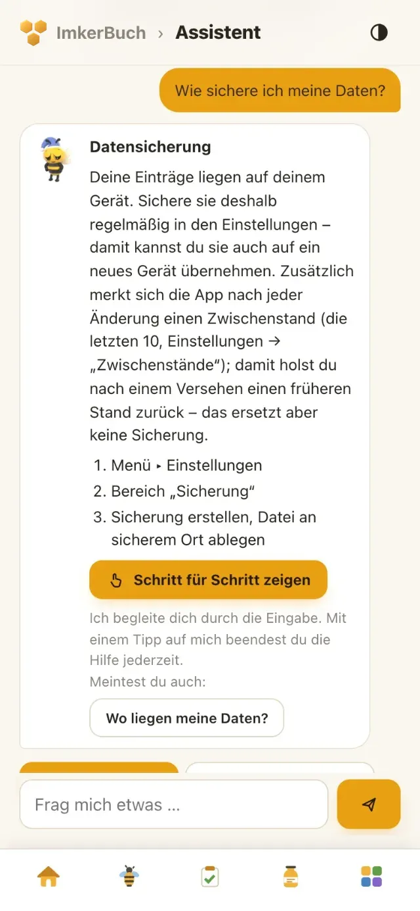

ImkerBuch begleitet dich durchs ganze Bienenjahr – von der Durchsicht am Stand über Königinnen und Honigernte bis zu Kassenbuch, Rechnungen und den Meldungen ans Amt. Komplett auf Deutsch, offline und ohne Konto.
30
Tage alles testen
Alle Funktionen kostenlos testen – ohne Abo.
2
Völker dauerhaft kostenlos
In der Light-Version: Durchsicht, Stockkarte, Varroa-Kontrolle und Königinnen.
0€
Abo
Einmal kaufen: 14,99 € Einführungspreis bis 31.12.2026, keine automatische Abbuchung.
Nicht nur ein Stockbuch. Alles, was deine Imkerei braucht.
Über 130 Funktionen in 10 Themen – vom Bienenstand über Honig und Verkauf bis zu den Unterlagen fürs Amt. Wähle ein Thema – dazu siehst du ein echtes Bild aus der App.
Thema 01 von 10
Am Bienenstand
Durchsicht direkt am Volk – schnell, mit großen Knöpfen, auch mit Handschuhen.
15 Funktionen12 davon auch in Light
9:41
Echtes Bild aus der App · Beispieldaten
Durchsicht am Stand.Light Eine Frage pro Bildschirm mit großen Knöpfen: Volksstärke, Brutbild, Sanftmut, Futter, Weiselzellen.
Volk für Volk durch den Stand.Light Pfeile führen zum nächsten Volk am Stand, am Ende steht eine Zusammenfassung zum Prüfen.
„Zuletzt“-Hinweis.Light Bei jeder Frage siehst du, was du beim letzten Mal geantwortet hast.
Startseiten-Kachel „Durchsicht am Stand“.Light Zeigt je Stand, wann zuletzt durchgesehen wurde, mit Start-Knopf und „Weiter bei …“.
Stockkarte.Light Jede Durchsicht mit Sternen 1–5, Futter, Weiselzellen und Notiz, nach Jahr filterbar.
Durchsicht-Vorlagen.Light Häufige Eingaben als Vorlage speichern und mit einem Tipp wieder nutzen.
Eigene Stockkarten-Felder.Light Eigene Felder wie „Baurahmen“ oder „Drohnenbrut“ anlegen; Ja/Nein- und Bewertungsfelder erscheinen auch am Stand.
Sammel-Erfassung.Light Durchsicht oder Varroa-Zählung für viele Völker mit einem Formular.
Sprachnotizen. Am Volk oder bei der Durchsicht eine Sprachnotiz aufnehmen und später anhören.
Fotos und Dokumente. Fotos mit der Kamera und Dokumente an Volk, Durchsicht, Stand, Königin, Behandlung, Beleg und Kontakt hängen, mit eigenen Dokumententypen.
QR-Aufkleber fürs Beutendach.Light Je Volk einen QR-Code als Etikettenbogen (PDF) erzeugen.
Aufkleber scannen.Light Knopf auf der Startseite und bei den Völkern: Kamera auf den QR-Aufkleber halten, und die Durchsicht für dieses Volk öffnet sich – auch ohne Internet.
Bienenstände.Light Stand mit Anschrift, Gemarkung, Flurnummer und Koordinaten, die das Handy per Knopf übernimmt; dazu Links zu Google Maps und OpenStreetMap.
Stand-Seite.Light Völker, Fahrten, Wetter und was hier blüht – alles zum Stand auf einer Seite. Fahrten, Wetter und Tracht: Vollversion.
Wanderungen und Wanderbuch. Völker Schritt für Schritt von Stand zu Stand umsetzen, mit Grund; Wanderbuch als PDF.
Mit Light markiert: auch in der kostenlosen Light-Version. Alles andere gehört zur Vollversion.
Varroa im Blick, Behandlungen sauber dokumentiert, Futter richtig geplant.
12 Funktionen2 davon auch in Light
9:41
Echtes Bild aus der App · Beispieldaten
Varroa-Kontrolle mit Ampel.Light Zählung mit Bodenschieber, Puderzucker, Auswaschen oder Gemüll; beim Milbenfall richtet sich die Ampel nach der Jahreszeit; mit Verlaufskurve.
Behandlungen und Bestandsbuch. Jede Behandlung mit Mittel, Menge, Anwendungsart und Wartezeit – das Bestandsbuch als PDF.
Behandlung für viele Völker. Stand wählen, Menge je Volk eintragen, einzelne Völker abwählen oder eigene Menge geben (z. B. Ableger) – jedes Volk bekommt seinen Eintrag.
Erinnerung ans Ende der Wartezeit. Bei Wartezeit legt die App automatisch eine Aufgabe zum Ende an.
Mittel vom Lager abziehen. Das Behandlungsmittel wird im Lager abgebucht.
Mengenrechner und Meine Mittel. Mittel einmal aus der Packungsbeilage anlegen; die App rechnet die Gesamtmenge und füllt die Behandlung vor.
Fütterung für viele Völker. Stand und Funktion wählen, die Fütterung landet bei jedem Volk; mit Zucker-, Sirup- und Winterfutter-Summe.
Futter-Rechner mit Plan. Bedarf rechnen, auf mehrere Gaben verteilen und als Fütterung übernehmen, die weiteren Gaben auf Wunsch als Aufgaben.
Sirup in Litern. Liter und Kilo werden umgerechnet, der reine Zucker wird mitgezählt.
Fütterung je Volk. Reiter im Volk und Übersicht je Volk, dazu Fütterungsliste als PDF.
Wiedervorlage. „Erneut prüfen in X Tagen“ legt eine Aufgabe an.
Saisonaler Tipp.Light Kachel für die Startseite, auf Wunsch einschaltbar: ein Tipp zum Monat – bei hohem Varroa-Befall zuerst die Warnung, in der Vollversion auch bei fehlender Auffütterung – mit Sprung in den passenden Bereich.
Mit Light markiert: auch in der kostenlosen Light-Version. Alles andere gehört zur Vollversion.
Was das Wetter macht und was an deinen Ständen blüht – passend für deinen Ort.
9 FunktionenVollversion
9:41
Echtes Bild aus der App · Beispieldaten
Wetter am Stand. Wetter vom Deutschen Wetterdienst auf Wunsch: ab Werk aus. Schaltest du es ein, ruft die App höchstens alle 30 Minuten ab, nur mit Internet.
Wetterverlauf. Grafik über 30 Tage, das Jahr oder alles; Werte auch von Hand eintragen und exportieren.
Wetter-Kachel. Das Wetter am Stand direkt auf der Startseite.
Trachtkalender. Eintragen, was blüht; die Blütezeit für deinen Stand rechnet die App aus Beobachtungen des Wetterdienstes in der Nähe – auch offline.
Jahreskalender der Trachten. Alle Trachten des Jahres auf einen Blick, auf Wunsch jedes Jahr wiederkehrend.
Kachel „Tracht“. Was gerade blüht und was in zwei Wochen kommt, mit „Als Aufgabe“ zum Vorbereiten.
„Was hier blüht“ am Stand. Jeder Stand zeigt seine Trachten mit Blühstatus.
Erinnerung vor Blühbeginn. Auf Wunsch kommt rechtzeitig eine Aufgabe.
Ernte je Tracht. Die App schlägt bei der Ernte die passende Tracht vor; die Statistik zeigt den Ertrag je Tracht.
Alle Funktionen dieses Themas gehören zur Vollversion.
Jedes Glas lässt sich zurückverfolgen – von der Ernte über die Charge bis zum Volk.
10 FunktionenVollversion
9:41
Echtes Bild aus der App · Beispieldaten
Ernte erfassen. Je Volk oder für den ganzen Stand mit Menge je Volk: Honig, Wabenhonig, Pollen oder Propolis, mit Sorte, Menge, Wassergehalt und Schleuderung.
Sorten und Laborergebnisse. Laborwerte eintragen und den Ernten zuordnen.
Chargen mit Losnummer. Losnummern mit Rückverfolgung Charge → Ernte → Volk.
Abfüllen. In mehrere Gebindegrößen von 20 kg bis 50 g oder eigene Größen abfüllen – mit MHD-Vorschlag und eigener Losnummer, auch direkt aus der Ernte.
Gläser, Deckel und Etiketten abbuchen. Beim Abfüllen gehen Gläser, Deckel und Etiketten vom Lager ab.
Verlust und Eigenverbrauch. Bruch, Rest im Eimer, Verschenktes oder selbst Gegessenes buchen – so stimmt der Bestand.
Bestand. Eine Zeile je Charge mit Gläsern im Regal und Rest im Eimer, dazu eine Übersicht nach Sorte und Glasgröße.
MHD-Wächter. Kurz vor Ablauf des MHD legt die App eine Aufgabe an.
Honig-Etiketten. Druckfertige Etiketten mit den Pflichtangaben, MHD, Los und Bio-Logo – 10 pro A4-Blatt.
Lohnverarbeitung. Honig lose an einen Verarbeiter abgeben, zum Beispiel für Met oder Essig; die Charge merkt sich das.
Alle Funktionen dieses Themas gehören zur Vollversion.
Verkaufen, kassieren, Rechnungen schreiben – Bestand und Kassenbuch buchen sich mit.
16 FunktionenVollversion
9:41
Echtes Bild aus der App · Beispieldaten
Verkauf erfassen. Ein Verkauf mindert den Bestand und bucht die Einnahme im Kassenbuch; mit Rabatt, Storno und Liste als PDF – auf Wunsch gleich mit Rechnung.
Marktverkauf-Kasse. Gläser antippen, Warenkorb, Wechselgeld, Kassieren – für den Wochenmarkt.
Kassenbuch. Einnahmen und Ausgaben mit Kategorie, Steuersatz und Kunde oder Lieferant.
Belegarchiv. Fotos und PDFs der Belege direkt an die Buchung hängen.
An- und Verkauf buchen. Einkauf, Verkauf oder Verlust für Material, Inventar, Produkte und Honig an einer Stelle.
Geschäftskosten. Laufende allgemeine Kosten in einem eigenen Reiter.
Auswertung und Ernteprognose. Jahresverlauf, Summen nach Kategorien und eine Schätzung der Ernte aus eigenen Vorjahren.
Rechnungen. Fortlaufende Nummer, Positionen aus Honig und Lager, Pfand, Rabatt und Skonto; Festschreiben und Stornieren.
Rechnung als PDF. Geschäftsbrief für das Fensterkuvert mit deinem Logo und optional eigenem Bezahl-QR-Code.
Drei Besteuerungsarten. Regelbesteuerung, Kleinunternehmer § 19 oder Pauschalierung § 24 – wählbar je Rechnung.
Abnehmer und Lieferanten. Kunden, Lieferanten und Bio-Partner an einem Ort, mit Suche und Filter.
Verbrauchsmaterial. Mittel, Futter, Gläser und Etiketten mit Mindestbestand, MHD und Kilopreis.
Inventar. Beuten, Geräte und Anhänger mit Anschaffung und Wert.
Weitere Produkte. Met, Kerzen, Propolis und mehr – im Lager mit Suche, Verkaufspreis und direktem Verkauf.
Pfand für Mehrweggläser. Zeigt, wie viele Gläser bei Kunden sind; Rücknahme mit einem Knopf.
Niedrige Bestände. Kachel und automatische Aufgabe, wenn Material knapp wird.
Alle Funktionen dieses Themas gehören zur Vollversion.
Statistik mit Vorjahresvergleich und jede Unterlage fürs Amt an einem Ort.
14 Funktionen9 davon auch in Light
9:41

Echtes Bild aus der App · Beispieldaten
Unterlagen an einem Ort.Light Alles zum Ausdrucken: Jahr wählen, suchen, nach Themen sortiert – als PDF, Excel oder CSV.
Anzeige nach § 1a.Light Anmeldung beim Veterinäramt mit Ständen, Lage und Koordinaten.
Meldung an die Tierseuchenkasse.Light Stichtag und Inhalt passend zu deinem Bundesland.
Wanderschild.Light Schild nach § 5a mit Name, Anschrift und Völkerzahl zum Ausdrucken.
Österreich und Schweiz.Light Registrierung im VIS bzw. beim Kanton, Völkermeldung und Standschild passend zum Land.
Volksakte.Light Ein Volk komplett – jeder Teil einzeln als PDF oder CSV, alles zusammen als PDF oder Excel.
Komplettausdruck.Light Alle Bereiche in einem PDF oder Excel; Bereiche und Jahr wählbar.
Export für deutsches Excel.Light Datum als TT.MM.JJJJ, Komma bei Zahlen, Umlaute korrekt, Filter in der Kopfzeile.
Jahresbericht.Light Das Wichtigste des Jahres auf wenigen Seiten als PDF.
Statistiken. Sechs Bereiche: Völker, Honig (mit Rangliste je Volk), Futter, Gesundheit, Finanzen und Arbeit – mit Vergleich zum Vorjahr und Hinweisen auf Auffälliges.
Kennzahlen. Zum Beispiel Winterverluste, Ertrag je Volk, Erlös je kg Honig, Kosten je Volk und Honig je Arbeitsstunde.
Imker-Rechner. 9 Rechner, unter anderem für Selbstkosten je Glas, Wassergehalt, Varroa-Befall, Rähmchenbedarf, Wachs, Kerzen und Propolis.
Aus anderer App übernehmen. Daten aus BeeManager, iBeekeeper und anderen Apps als CSV oder Excel übernehmen; die Spalten ordnet die App fast selbst zu.
PDF auslesen. Ein altes Bestandsbuch als PDF einlesen; erkannte Einträge lassen sich übernehmen.
Mit Light markiert: auch in der kostenlosen Light-Version. Alles andere gehört zur Vollversion.
Offline und ohne Konto. Deine Einträge liegen auf deinem Gerät; nur Wetter und wenige Zusatzfunktionen senden Koordinaten oder Suchbegriffe, die Spracherkennung läuft je nach Gerät über Apple oder Google.
19 FunktionenAlles auch in Light
9:41

Echtes Bild aus der App · Beispieldaten
Imme – dein Assistent. Beantwortet Fragen zur App und zur Imkerei sofort, auch ohne Internet.
„Zeig’s mir“. Imme öffnet den richtigen Bereich und führt Schritt für Schritt durch die Eingabe.
Einführung. Beim Start zeigt Imme das Wichtigste: umschauen, Stand und Volk anlegen, erste Durchsicht, sichern.
Startseite nach Wunsch. 16 Kacheln zur Auswahl, verschieben durch Gedrückthalten und Ziehen.
Eigene Leiste unten. Start und bis zu drei Lieblingsbereiche unten, alle anderen unter „Mehr“.
Wischen in Listen. Eine Zeile zur Seite wischen zeigt „Bearbeiten“ und „Löschen“.
Lernende Vorschläge. Felder schlagen vor, was du schon einmal eingetragen hast.
Offline und ohne Konto. Deine Einträge liegen auf deinem Gerät.
Sicherung. Sicherung speichern in iCloud Drive, Google Drive oder per Mail und wieder einspielen (zusammenführen oder ersetzen).
Erinnerung ans Sichern. Hinweis in der App ab 7 Tagen, auf Wunsch eine Mitteilung nach 14 Tagen.
Zwischenstände. Die App merkt sich die letzten 10 Stände zum Zurückholen.
Papierkorb. Gelöschtes bleibt 30 Tage im Papierkorb; wiederherstellen geht in Light für alles, was in Light frei ist.
Alle Daten löschen. Zum Beispiel vor dem Verkauf des Handys.
Eigenes Logo und Imkereidaten. Erscheinen auf deinen PDFs und Rechnungen.
Listen anpassen. Dokumententypen, Tätigkeiten, Arbeitsschritte und Honigsorten selbst festlegen.
Hell und Dunkel. Automatisch, hell oder dunkel.
Hilfe und Kontakt. Fehler melden, Frage stellen oder Idee vorschlagen – direkt per E-Mail an den Entwickler.
Was ist neu? Nach jedem Update zeigt die App die Neuerungen.
Light und Vollversion. 30 Tage alles testen, danach kostenlos als Light weiter; Vollversion als Einmalkauf, Käufe wiederherstellen, Code einlösen.
Alles in diesem Thema ist auch in der kostenlosen Light-Version dabei.
Nein. ImkerBuch läuft offline, auch am Stand ohne Netz. Eine Verbindung braucht nur, was Daten von außen holt – etwa Wetter, Adresssuche, die Landbedeckung im Umkreis (Bio), je nach Gerät die Spracherkennung sowie der Kauf und der erste Start der Testphase im Store.
Offline
Am Stand
Datenschutz02 / 07
Wo liegen meine Daten?
Deine Einträge liegen auf deinem Gerät, nicht auf unserem Server. Es gibt kein Konto, keine Werbung, kein Tracking. Nur für das Wetter und wenige Zusatzfunktionen gehen Koordinaten, Suchbegriffe oder je nach Gerät Sprache an die in der Datenschutzerklärung genannten Dienste.
Kein Konto
Kein Tracking
Preis03 / 07
Was kostet die Vollversion?
Einmalig 14,99 € (Einführungspreis bis 31.12.2026, danach 24,99 €). Vorher testest du 30 Tage alle Funktionen kostenlos. Danach läuft ImkerBuch kostenlos als Light weiter – mit bis zu 2 Völkern.
Einmalkauf
Light
Preis04 / 07
Gibt es ein Abo?
Nein. Die Vollversion ist ein Einmalkauf – keine automatische Abbuchung. Was du eingetragen hast, bleibt sichtbar und sicherbar.
Kein Abo
Geräte05 / 07
Funktioniert es auf iPhone und Android?
Ja – auf iPhone und Android, auf Handy und Tablet. Auf einem neuen Gerät holst du die Vollversion über „Käufe wiederherstellen“ zurück – mit derselben Apple-ID bzw. demselben Google-Konto.
iPhone
Android
Tablet
Sicherung06 / 07
Kann ich meine Daten sichern?
Ja. Über das Teilen-Menü, z. B. in iCloud Drive, Google Drive oder per Mail an dich selbst. Ab einer Woche ohne Sicherung erinnert dich die App, auf Wunsch nach zwei Wochen auch per Mitteilung. Alle Einträge gibt es auch als Excel oder CSV, auch in der Light-Version. Fotos und Sprachnotizen stecken in der Sicherung.
Sicherung
Erinnerung
Excel
CSV
Geräte07 / 07
Kann ich ImkerBuch auf mehreren Geräten nutzen?
Heute sicherst du deine Daten über das Teilen-Menü (z. B. in iCloud, Google Drive oder per Mail) und liest sie auf dem anderen Gerät ein. Eine freiwillige Cloud-Synchronisierung mit Servern in der EU ist in Planung – einen Termin gibt es noch nicht.
Teilen-Menü
Mehrere Geräte
Fragen?Mehr steht auf der Hilfe-Seite. Oder schreib mir direkt aus der App über „Hilfe & Kontakt“.
Einmal zahlen, ohne Abo nutzen. Erst 30 Tage alles testen – dann entscheidest du.
Light nach der Testphase
0 €
dauerhaft kostenlos
Bis zu 2 Völker
Durchsicht, Stockkarte, Varroa-Kontrolle und Königinnen
Alle Einträge als Excel oder CSV
Vollversion Einmalkauf
14,99 €
Einführungspreis bis 31.12.2026, danach 24,99 €. Einmalig – kein Abo, keine automatische Abbuchung
Alle Bereiche zum Eintragen, mehr als 2 Völker
Finanzen, Lager, Behandlungen, Fütterung, Ernte, Aufgaben, Fotos und Sprachnotizen
Neues Gerät: „Käufe wiederherstellen“ (gleiche Apple-ID bzw. gleiches Google-Konto)
Bald im App Store& bei Google Play
14,99 € in Deutschland und Österreich, 14,95 CHF in der Schweiz, jeweils bis 31.12.2026. Ab 1.1.2027 24,99 € bzw. 24,95 CHF. Endpreis; etwaige Umsatzsteuer ist enthalten, weitere Kosten fallen nicht an. Gekauft wird über den App Store bzw. Google Play, in der Schweiz zum Start nur über den App Store.
Ideen
Welche Idee soll als Nächstes kommen? Ein Tipp genügt, ohne Anmeldung.
Cloud-Zugang für mehrere Geräte
Handy und Tablet immer auf demselben Stand.
Zugänge für Helfer
Mitarbeiter und Familie tragen mit ein, du behältst den Überblick.
Stockwaage verbinden
Gewichte kommen von selbst ins Stockbuch.
Code auf dem Honigglas
Kunden sehen Herkunft und Charge per Scan.
Ideen und Pläne, keine Zusage und kein Termin.
Imkereien
Drei Betriebe aus der Praxis, die ImkerBuch im Alltag nutzen.
Werbung
PFAU-Honig
Naturland-Imkerei in Utting am Ammersee. Regionaler Honig im Mehrwegglas, direkt ab Hof und am Automaten.